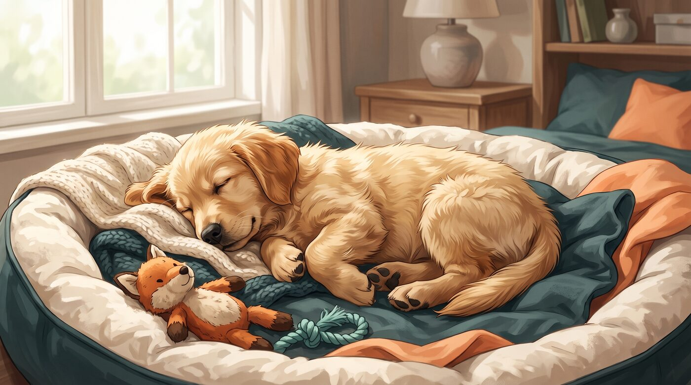
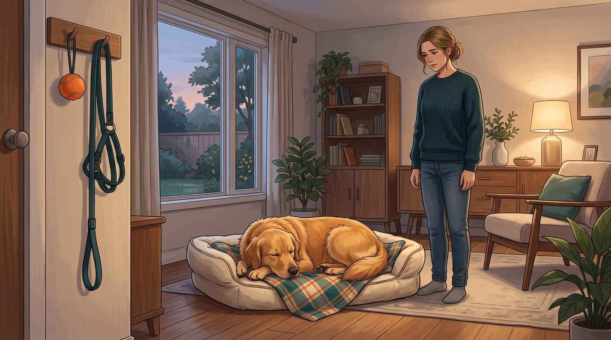
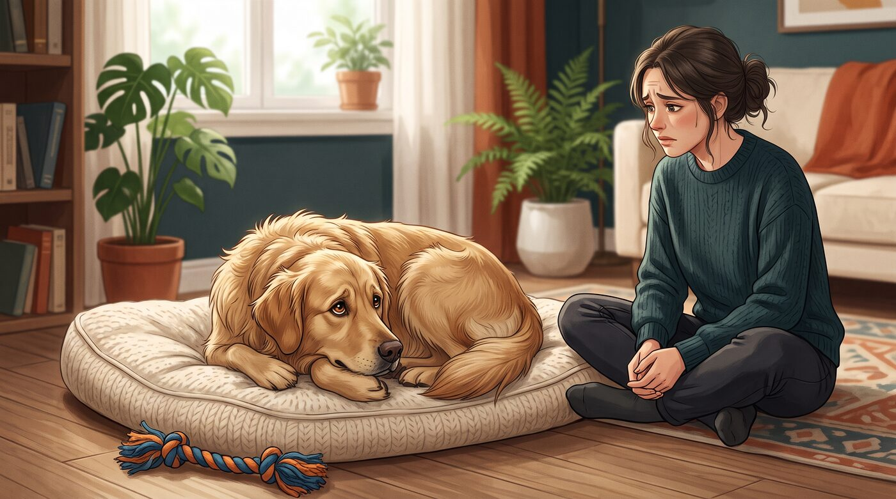
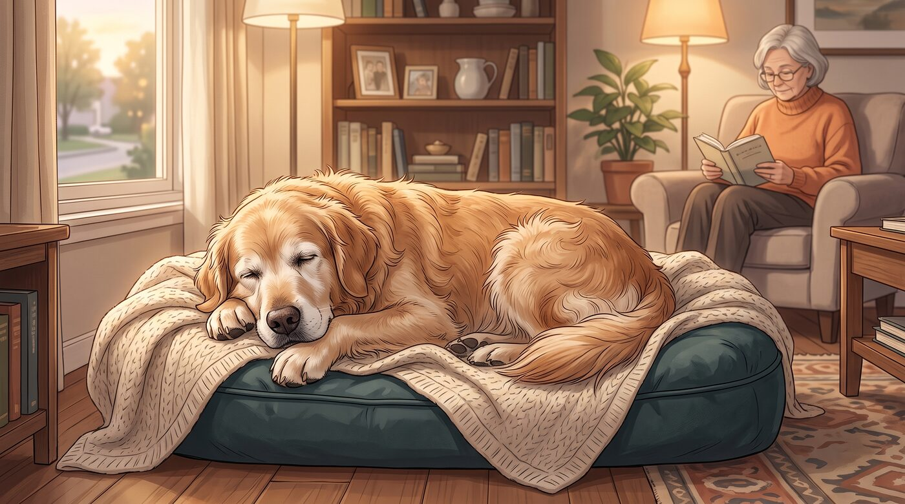
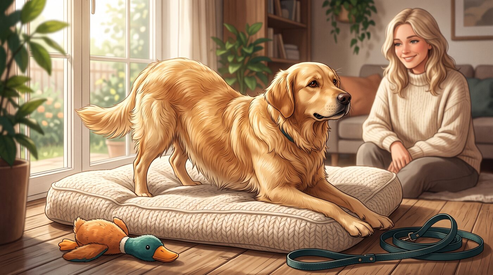
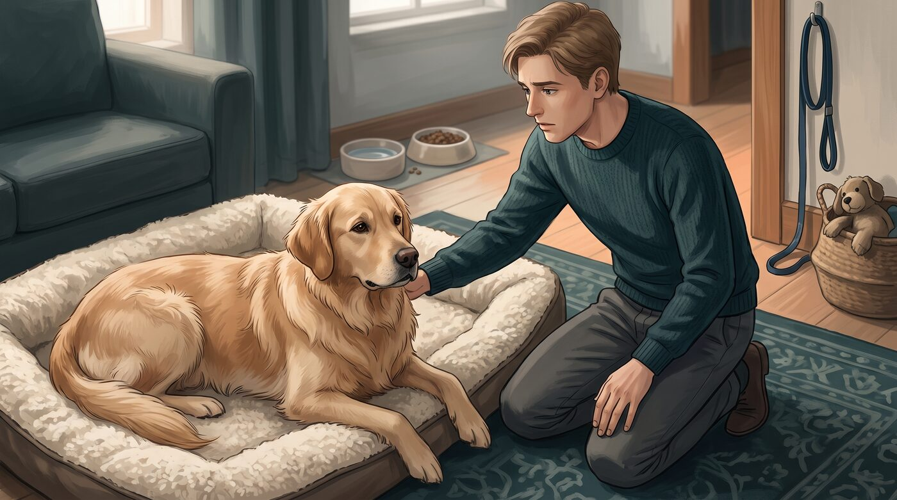

Confesso que uma das coisas que mais me fazem sorrir quando convivo com um cachorro é vê-lo dormir profundamente enquanto eu estou tentando resolver mil coisas pela casa. Mas quando esse sono passa a preocupar?
Às vezes ele dorme no sofá. Depois muda para o tapete. Mais tarde vai para a caminha e parece que passou o dia inteiro trabalhando.
Mas existe uma pergunta que muitos tutores acabam fazendo: "Meu cachorro está dormindo demais ou simplesmente está descansando o quanto precisa?"
E aqui existe uma diferença importante. O número de horas de sono, sozinho, não conta toda a história. O mais importante é conhecer o padrão normal daquele cachorro e perceber quando alguma coisa mudou.
1. Afinal, quantas horas um cachorro costuma dormir?
Cães dormem bastante mais do que nós.
Um cão adulto pode passar uma grande parte do dia dormindo ou descansando. Filhotes e cães idosos normalmente precisam de ainda mais tempo de repouso. Algumas fontes veterinárias citam médias bastante variáveis, justamente porque idade, tamanho, rotina e indivíduo fazem diferença.
Por isso, eu evitaria olhar para o relógio e pensar: "Ele dormiu 14 horas. Então tem alguma coisa errada."
Não necessariamente.
Um cachorro que dorme bastante, acorda normalmente, come, brinca, passeia e reage aos estímulos que normalmente despertam seu interesse, pode simplesmente estar seguindo seu padrão natural.
O que me preocuparia mais seria uma mudança brusca.
2. Filhotes realmente podem dormir muito

Se você acabou de trazer um filhote para casa, prepare-se: ele pode alternar momentos de muita energia com longos períodos de sono.
Isso acontece porque o filhote está passando por uma fase intensa de crescimento e desenvolvimento.
Eu vejo isso como uma espécie de "ciclo": ele acorda, quer explorar absolutamente tudo, brinca como se tivesse tomado três cafés, come, faz suas necessidades… e de repente simplesmente desliga.
E isso pode ser perfeitamente normal.
Além disso, filhotes precisam de uma rotina adequada de alimentação, socialização, treinamento e descanso.
Por isso, não é uma boa ideia tentar manter um filhote acordado o dia inteiro simplesmente porque ele parece ter muita energia.
Descanso também faz parte do desenvolvimento.
3. E quando o cachorro adulto começa a dormir mais?

Aqui está um ponto que merece mais atenção.
Se seu cachorro sempre dormiu bastante, mas continua acordando animado, interessado em comida, passeios, brinquedos e pessoas, provavelmente estamos apenas diante do padrão individual dele.
Mas imagine outra situação.
Seu cachorro sempre corria para pegar a guia. Agora não levanta.
Antes ouvia o pote de ração e aparecia imediatamente. Agora continua deitado.
Antes brincava com seu brinquedo favorito. Agora parece não se importar.
Essa mudança é mais importante do que simplesmente contar as horas de sono.
Mudanças no padrão de sono podem acompanhar alterações de saúde, dor ou outras condições que precisam ser investigadas.
4. Dormir mais pode ser um sinal de dor?

Pode.
E essa é uma das coisas que eu acho mais importantes para um tutor aprender a observar.
Nem todo cachorro demonstra dor chorando.
Alguns simplesmente ficam mais quietos.
Podem dormir mais, perder o interesse por brincadeiras, evitar determinadas posições ou demonstrar dificuldade para encontrar uma posição confortável.
Também podem apresentar mudanças no comportamento, ficar mais retraídos ou não querer ser tocados em determinadas regiões.
Imagine um cachorro que sempre adorou subir no sofá. De repente, ele começa a permanecer no chão.
Ou um cachorro que costumava dormir esticado e agora parece não conseguir encontrar uma posição confortável.
Não significa automaticamente que ele esteja com dor.
Mas é uma mudança que merece ser observada.
5. O cachorro idoso pode dormir mais?

Sim.
Conforme envelhecem, muitos cães passam a descansar mais e apresentam mudanças naturais no padrão de atividade.
Mas existe uma armadilha aqui: não devemos atribuir toda mudança ao envelhecimento.
Um cachorro idoso pode dormir mais simplesmente porque seu ritmo mudou. Porém, alterações importantes no sono também podem estar relacionadas a dor, problemas de saúde ou alterações cognitivas.
Um exemplo particularmente importante é quando o cachorro começa a inverter o ciclo de sono.
Ele dorme praticamente o dia inteiro e passa a ficar inquieto, vocalizando ou andando pela casa durante a madrugada.
Esse tipo de mudança merece uma conversa com o veterinário.
6. O que eu observo quando meu cachorro acorda?

Essa talvez seja a melhor dica de todo o artigo.
Em vez de perguntar apenas: "Quanto tempo meu cachorro dormiu?"
eu perguntaria: "Como ele fica quando acorda?"
Observe:
- Ele levanta normalmente?
- Demonstra interesse por comida?
- Quer brincar?
- Reage quando você pega a guia?
- Procura interação?
- Caminha normalmente?
- Parece alerta?
- Responde aos sons e estímulos habituais?
- Está com o mesmo comportamento de sempre?
Um cachorro pode dormir muitas horas e acordar completamente disposto.
Por outro lado, um cachorro que dorme apenas algumas horas, mas acorda abatido, não quer levantar ou perdeu o interesse pelas atividades habituais pode estar apresentando algo que merece investigação.
A VCA recomenda observar justamente essas mudanças no comportamento habitual, e não apenas contar as horas de sono.
7. Quando dormir demais deixa de ser apenas sono?

É aqui que eu colocaria a maior atenção.
Procure orientação veterinária quando o aumento do sono vier acompanhado de outras mudanças.
Por exemplo:
- Falta de apetite
- Vômitos ou diarreia
- Tosse
- Dificuldade para respirar
- Dificuldade para levantar
- Perda de interesse por atividades
- Dor ou dificuldade para encontrar uma posição confortável
- Mudança brusca de comportamento
- Desorientação
- Fraqueza importante
- Dificuldade para acordar
Uma alteração significativa de energia também merece atenção. Em situações mais graves, um animal pode ficar difícil de acordar ou incapaz de se levantar, situações que exigem atendimento veterinário imediato.
E existe outro detalhe que considero muito útil: se o cachorro estiver dormindo, observe sua respiração.
Uma frequência respiratória persistentemente elevada durante o sono pode ser um sinal que precisa ser discutido com um veterinário, especialmente quando aparece junto com outros sintomas.
O mais importante é conhecer o "normal" do seu cachorro
Depois de conviver algum tempo com um cachorro, nós acabamos conhecendo pequenas coisas que ninguém mais percebe.
Sabemos quanto tempo ele costuma dormir. Sabemos como ele acorda. Sabemos qual barulho faz com que ele levante imediatamente. Sabemos como ele reage quando pegamos a coleira.
E é justamente por isso que uma mudança pode ser tão importante.
Não existe um número mágico de horas que determine sozinho se um cachorro está saudável.
O melhor parâmetro é o próprio cachorro.
Se ele dorme bastante, mas continua sendo aquele mesmo cachorro quando está acordado, provavelmente o sono faz parte da rotina dele.
Mas se você percebe: "Ele não era assim antes…" vale a pena prestar atenção.
Às vezes, a primeira pista de que alguma coisa não está bem não aparece em um exame. Aparece justamente naquele momento em que percebemos que nosso cachorro deixou de fazer algo que sempre fazia.
Este conteúdo é educativo e não substitui uma avaliação veterinária. Se houver mudança súbita ou persistente no comportamento, sono, alimentação ou nível de energia do seu cachorro, procure um médico-veterinário.
Fontes e referências
- Why Do Dogs Sleep So Much? — American Kennel Club
- Is Your Pet Sleeping Too Much? — VCA Animal Hospitals
- How To Tell When Your Dog Is in Pain — American Kennel Club
- Lethargy in Pets — VCA Animal Hospitals
- Recognizing Behavioral Changes in Senior Dogs — American Kennel Club
- Home Breathing Rate Evaluation — VCA Animal Hospitals